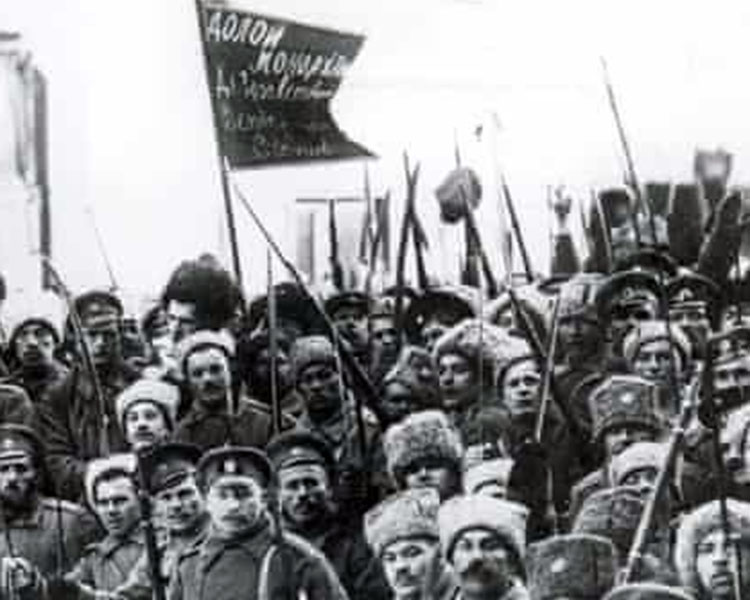
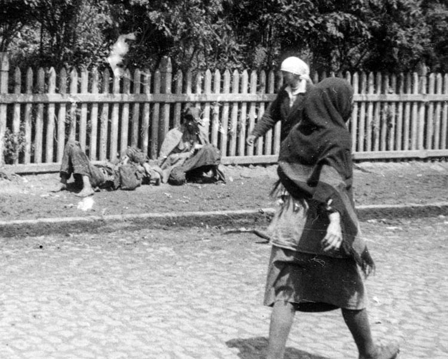
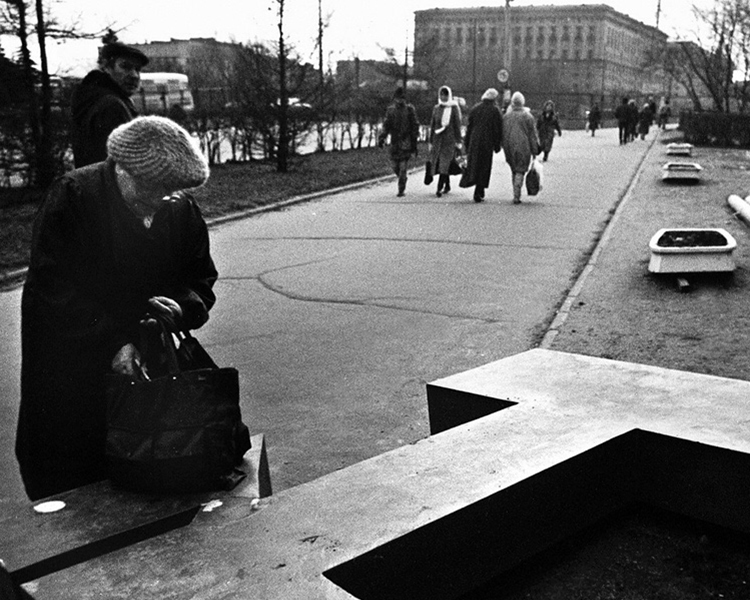
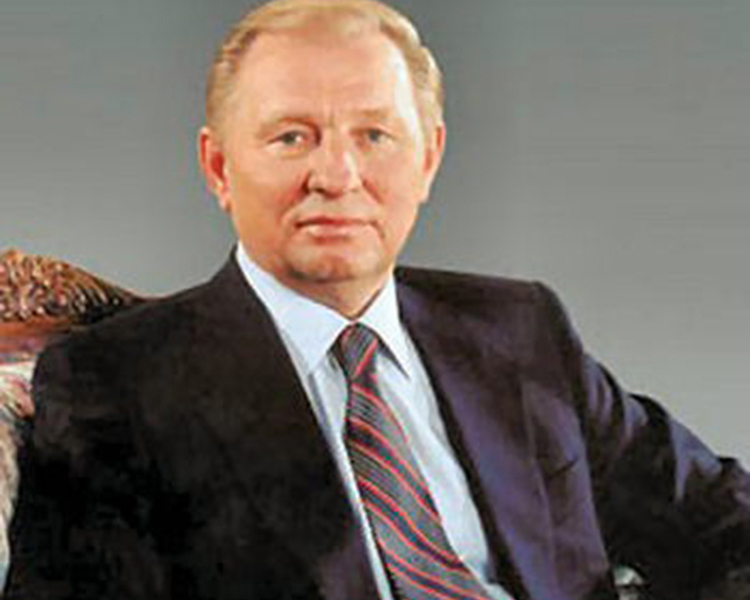
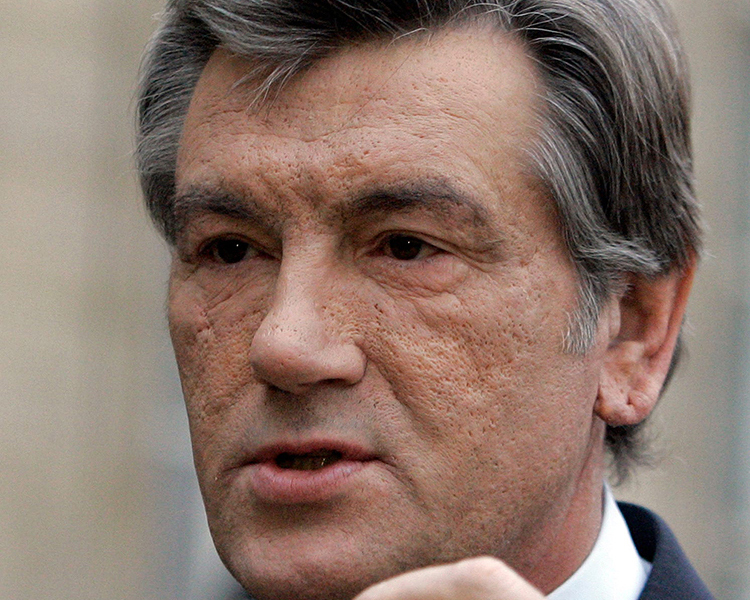
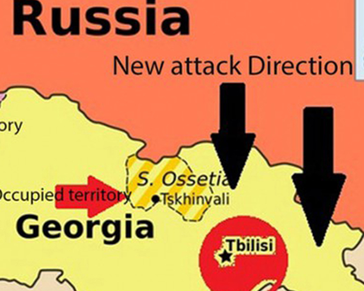
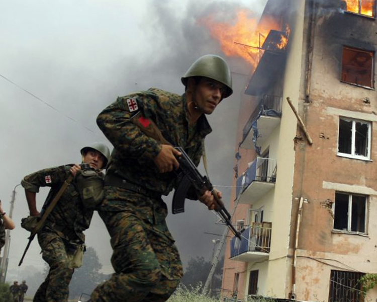
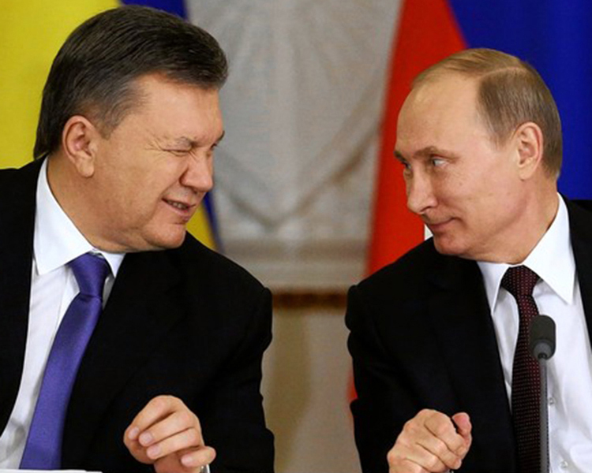
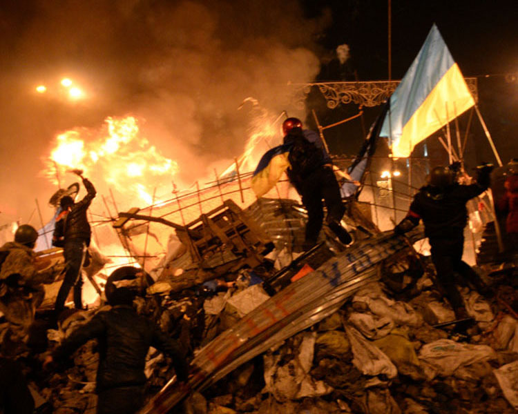
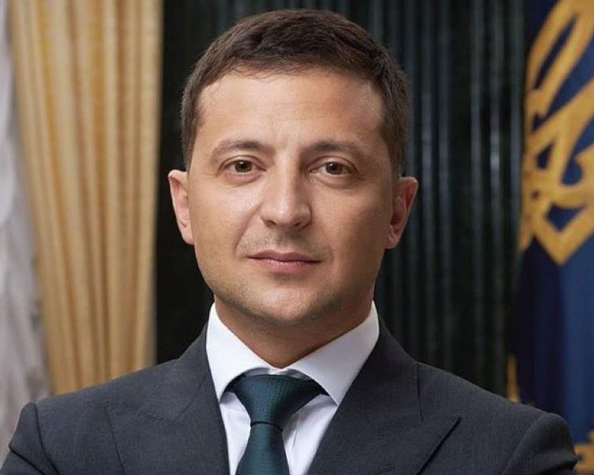

The Cossack Hetmanate ruled the currently central part of Ukraine.
They fought against both Soviet and German occupation of Ukraine.
Cossacks ruled the region from 1648 to 1764 as per the historic
records.

Bolsheviks consolidated the state of Ukraine before World War II
began

Holodomor Famine - infamously known for the death of millions of
Ukrainins. It is referred to as a deliberate act by Soviet leader
Stalin with an intention of mass killings of Ukrainians.
Stalin took control of the western Ukrain from Germany under a
pact signed between the two countries. Since then the dilemma of
whether to stand by side of Eurpoe or Russia began.

With a fall of Soviet Union, Ukraine became the independent state
Poland, Hungary and Czechoslovakia demanded the membership of NATO
as they were feared that Russians would invade them. They also
said that if not given membership they would get nuclear weapons

First Ukrainian President was voted out and shift of power
happened. Leonid Kuchma replaced Leonid Kravchuk promising equal
status for Russian language in Ukraine
Poland and Hungary along with a few other memebers was introduced
to NATO. Currently, it has 30 member countries.

Power shift continued in Ukraine periodically. Viktor Yanukovich
was voted out and Viktor Yushchenko gained power. He promised
better relation on eastwards of the country - essentially with the
Europe.
Bulgaria, Estonia, Latvia, Lithuania, Romania, Slovakia and
Slovenia joined the NATO. Meanwhile a series of revolutions like
Rose Revolution, Orange Revolution and Tulip Revolution took place
ousting pro-Russian leaders from Georgia, Ukraine and Kyrgyzstan,
respectively

Georgia and Ukraine were promised NATO membership in a meeting
held in Bucharest

Russia defeated Georgia followed by the NATO membership promise
announcement

Viktor Yanukovich defeated his predecessor Yushchenko to become
fourth president of Ukraine
Russia opposed the EU membership of Ukraine in a violent mode
during Maiden Revolution which resulted in annexation of Crimea.
Russia took over that Ukrainian region with a violent actions
Yanukovich was ousted followed by the massive protests against him
in 2010 by the diverse-civil society groups

Billionaire Petro Poroshenko became fourth president of Ukraine
followed by Revolution of Dignity.

In 2019, Russian-speaking candidate who promoted peace - Volodymyr
Zelensky - became the president defeating the billionaire Petro
Zelensky couldn't find any viable solution for peace with Russia.
Russia invaded Ukraine. Ukriane resisted ferociously as opposed to
predictions of a quick end to the war.